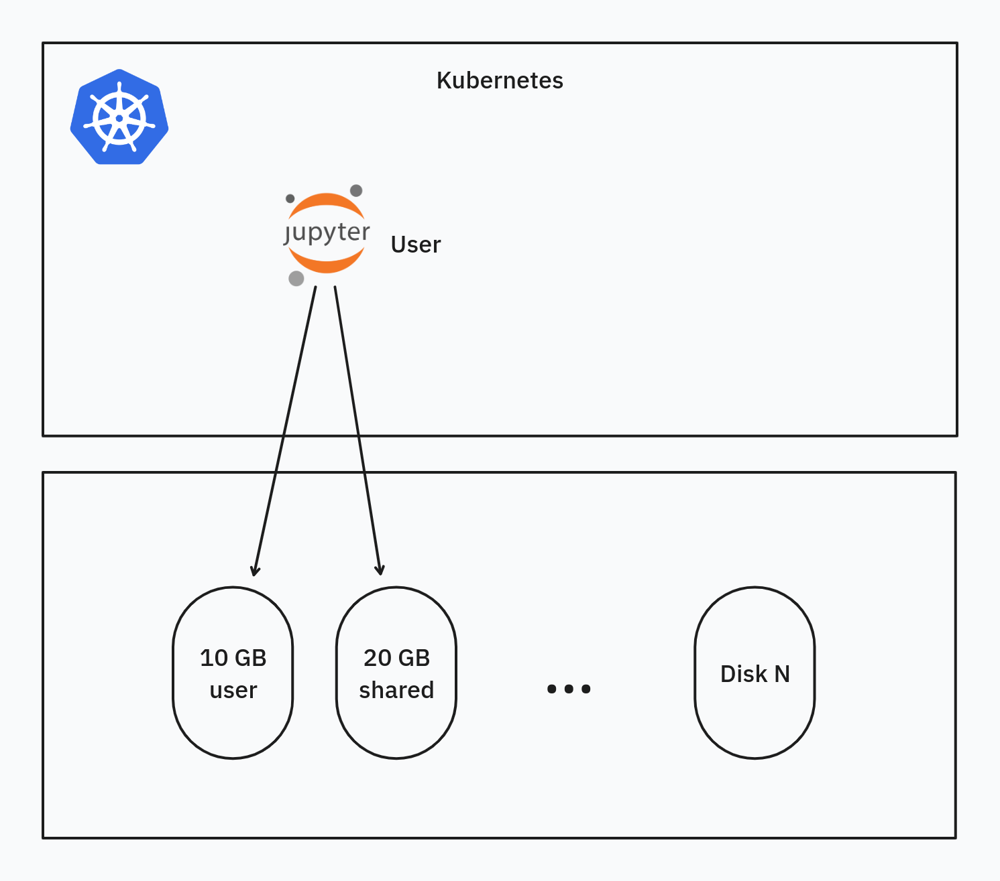

Storage¶
Overview¶
The storage architecture within the ALTERNATIVE platform is designed to provide robust, scalable, and persistent data storage solutions. This is achieved by leveraging Kubernetes' powerful storage abstractions: StorageClass, Persistent Volume Claim (PVC), and Volume. These abstractions decouple applications from the underlying storage infrastructure, enhancing flexibility and scalability.
 Figure 2: ALTERNATIVE cloud storage architecture
Figure 2: ALTERNATIVE cloud storage architecture
Dynamic Allocation of Data Volumes¶
The platform utilizes Kubernetes' dynamic provisioning capabilities to allocate data volumes as needed. This approach ensures efficient use of storage resources by creating volumes on-the-fly to meet application demands, eliminating the need for pre-provisioning storage, optimizing resource allocation, and reducing overhead.
Persistence and Reattachment¶
A key feature of the platform's storage strategy is data persistence, crucial for maintaining data integrity and continuity. Persistent data volumes remain intact even if the associated application is terminated or fails. These volumes can be seamlessly reattached to other instances of the application, ensuring data continuity and minimizing downtime.
Delegation of Scalability and Recovery¶
The platform delegates scalability, recovery, and persistence responsibilities to the cloud provider. By leveraging the cloud provider's robust infrastructure and services, the platform benefits from high scalability and efficient recovery mechanisms. This delegation allows the platform to focus on its core functionalities while relying on the cloud provider for maintaining storage resilience and scalability.
Types of Storage Used¶
- Block Storage: The platform employs block storage as the primary file system for applications. This type of storage is ideal for scenarios where performance and low latency are critical, providing high-speed access to data suitable for various workloads.
- S3 Storage: For the CKAN component of the platform, S3 storage is utilized. Known for its scalability and durability, S3 is an object storage service offering a simple and cost-effective solution for storing and retrieving large amounts of data, aligning well with CKAN's design goal of handling large datasets.
S3 Storage¶
The ALTERNATIVE platform, particularly its CKAN component, has specific storage requirements due to potentially large datasets containing omics data. To effectively manage these datasets, the platform employs S3 storage, well-suited for handling large volumes of data.
Scalability and Cost-Effectiveness of S3¶
S3 storage is chosen for its exceptional scalability and cost-effectiveness. It handles vast amounts of data, scaling seamlessly with the platform's storage needs. This scalability ensures that as the volume of omics data grows, the storage infrastructure can grow correspondingly without significant challenges. Additionally, S3's pricing model, which involves paying only for the storage used, makes it a cost-effective solution for managing large datasets.
Custom CKAN Integration with S3¶
CKAN's integration with S3 storage is achieved through a custom CKAN extension. This extension enables CKAN to efficiently interface with S3 storage, optimizing data storage and retrieval processes for performance and reliability.
Direct Interface with S3¶
In the ALTERNATIVE platform, CKAN interfaces directly with S3 storage, bypassing integration via the Kubernetes plane. This direct interaction streamlines data flow between CKAN and S3, reducing complexity and potential bottlenecks that might arise from additional layers of integration.
S3 Storage Service and Minio Library¶
The S3 storage service provided by the cloud provider utilizes the Minio library, an open-source object storage server fully compatible with Amazon S3 APIs. Minio enhances the platform's ability to interact with S3 storage efficiently and securely.
CKAN's API-based Data Exposure¶
CKAN does not directly expose the underlying S3 storage to end users. Instead, CKAN provides its own set of APIs for data access, ensuring controlled and secure data access. This approach enhances security and allows for the implementation of additional features and controls over how data is accessed and used.
In summary, the use of S3 storage in the ALTERNATIVE platform, particularly for CKAN, addresses the specific needs of large-scale omics data management. The custom integration of CKAN with S3, the direct interface approach, and the use of the Minio library ensure efficient handling of large datasets while maintaining cost-effectiveness and security.
Block Storage¶
In the ALTERNATIVE platform, block storage is the main type of data storage utilized by applications. This section details the implementation and management of block storage within the platform's architecture.
Exposure as File System¶
Block storage is exposed to applications and services as a file system, allowing developers to interact with the storage using standard file operations. This method simplifies the process of reading from and writing to the storage medium, making it highly accessible for a variety of applications.
Underlying Storage System¶
Block storage systems are typically disk-based, utilizing either Hard Disk Drives (HDD) or Solid State Drives (SSD). The choice between HDD and SSD depends on a trade-off between cost and performance. SSDs, with their faster data access speeds, are well-suited for high-performance requirements, while HDDs are used for cost-effective storage solutions where speed is less critical.
Consumption via Kubernetes APIs¶
Block storage within the platform is consumed through Kubernetes APIs using volumes, Persistent Volume Claims (PVCs), and Storage Classes. This integration ensures seamless and efficient management of storage resources within the platform's ecosystem. The platform offers flexibility in defining different storage classes tailored to meet varying performance requirements, allowing customization based on the specific needs of different applications or services.
Decoupling of Applications from Storage¶
Using block storage in this manner decouples applications from the physical storage, enhancing flexibility in scenarios such as backup, disaster recovery, and migration. By abstracting the storage layer, applications can be easily moved, backed up, or restored without managing the complexities of the underlying storage infrastructure, significantly improving the platform's resilience and agility in handling data.
NFS¶
The platform deploys an NFS (Network File System) server to provide an additional storage class for some applications. For instance, JupyterHub users require a shared data folder for collaboration, necessitating a storage class with mode ReadWriteMany. Since the cloud provider only offers block storage classes of type ReadWriteOnce, the NFS server is used to expose such a volume.
CKAN Storage¶
The CKAN application uses several types of storage: - Database: A relational database (Postgres) is used to store the application state, including metadata and user data. - S3: User-defined datasets are mapped to S3 buckets. - Block Storage: Regular files, such as configuration files needed by CKAN, use block storage.
JupyterHub Storage¶
 Figure 3: Diagram of Jupyter Storage
JupyterHub has more complex storage requirements compared to other ALTERNATIVE services.
Multi-user Capability¶
Each user is dynamically allocated a Kubernetes POD containing the Jupyter kernel and runtime. The POD is ephemeral, but its associated data must persist to a user volume (10 GB). Each user is allocated this volume upon first login, and it remains after session timeout or logout. When the POD is recreated, it attaches to the same volume, preserving the user's state from the last session.
Shared Folder¶
Users can share data directly in Jupyter via a shared folder mapped to a static volume (20 GB) with mode ReadWriteMany. Multiple PODs must be able to attach and write to this volume simultaneously, provided by the NFS server.
Accessing CKAN Data from Jupyter¶
A custom Python library, alternative-lib, simplifies access to CKAN/S3 data from Jupyter. Hosted on GitHub as an open-source project, it enhances user experience by providing seamless data access.
Databases¶
A Postgres database, deployed within the Kubernetes plane, is used by CKAN and Keycloak services, leveraging block storage.